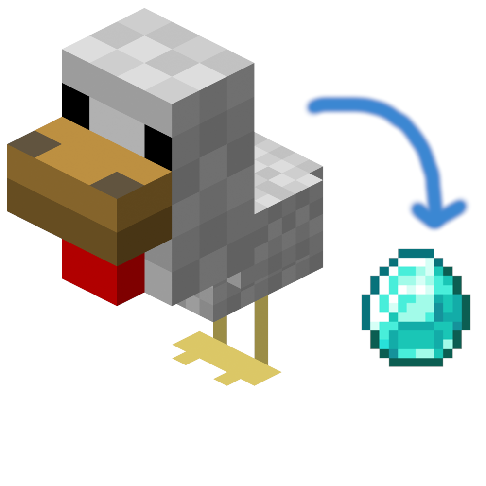

My LinkedIn page, showing my work experience and my studies at the Academy of Interactive Entertainment (AIE). Unity C#
A two player coop puzzle game with magic, created for an end-of-year project as part of a team at AIE.
Python
A discord bot that functions as a simple multiplayer environment, with an SQL database designed specifically for it.

CurseForge Link
Java
A simple minecraft mod for editing the drops of any entities.